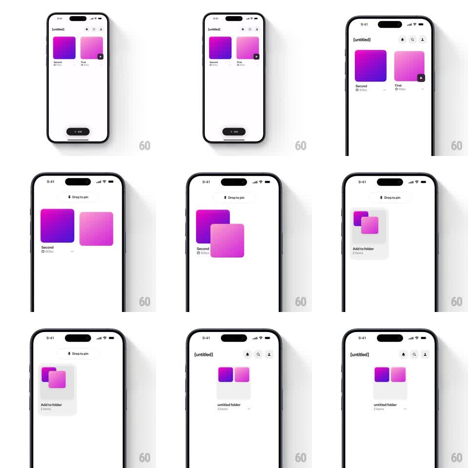

Media
Frame-by-frame

Rebuild this interaction 1:1: long-press a card and drag it onto a second card - a "Drop to pin" header appears, the two cards overlap into a stacked "Add to folder" preview, and dropping morphs them into a single "untitled folder" group.

Rebuild this interaction 1:1: long-press a card and drag it onto a second card - a "Drop to pin" header appears, the two cards overlap into a stacked "Add to folder" preview, and dropping morphs them into a single "untitled folder" group. ## Integration Integration: stack-agnostic spec - springs given as stiffness/damping, timed motions as duration + curve; map every value to your framework and animation library of choice. ## Scene Library grid with two rounded-square cards (purple "Second", pink "First"). During drag: a gray "Drop to pin" pill at top. Hover state: target card highlighted, an "Add to folder / 2 items" ghost preview. Result: one folder tile "untitled folder / 2 items" with the two colors peeking. ## Motion spec Pattern: hold-drag + overlap morph to folder. - Long-press (~300ms): card lifts (scale 1.03, shadow deepens, haptic), becomes the drag proxy; header pill slides down (200ms). - Drag: proxy tracks the finger 1:1; the target card tints when the proxy overlaps its bounds. - Hover hold (~250ms): proxy snaps toward the target's slot (spring ~350/26) and both shrink slightly into an offset stack inside a gray folder-shaped ghost labeled "Add to folder / 2 items". - Drop: ghost morphs into the real folder tile - the two cards settle as peeking swatches, label becomes "untitled folder / 2 items" (~300ms, spring ~320/24); grid reflows. - Cancel (drag off): proxy flies back to its slot (spring ~300/24). ## Calibration - The folder ghost appears only after a hover hold - a fast pass-over doesn't tease grouping. - Both cards stay visible as swatches in the final folder; neither disappears. ## Reduced motion Drag proxy moves without lift; folder swap crossfades. ## Don't miss - "Drop to pin" header only exists during the drag. - The folder tile occupies one grid slot - the two cards' slots collapse into it.